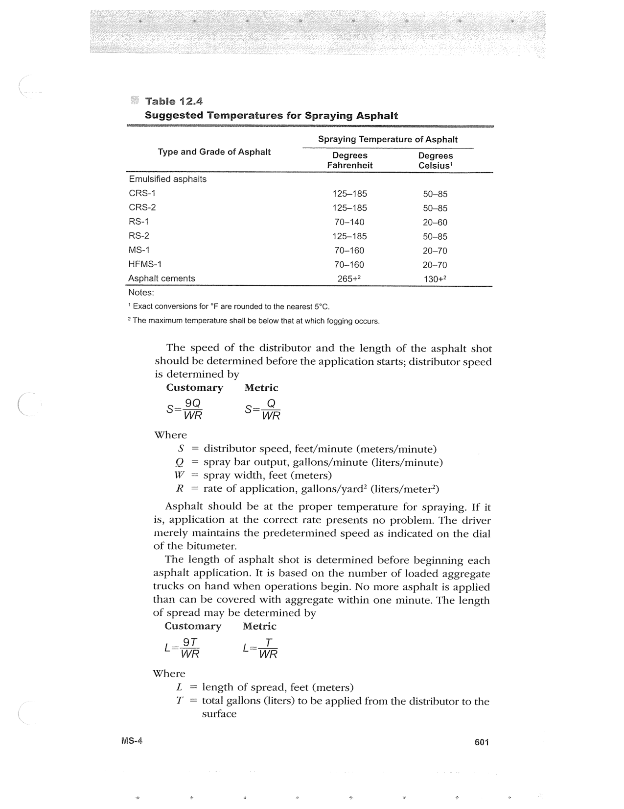

PDF page 635 · book page sequence 601


Searchable transcription
Unproofread OCR · 243 detected words; mean OCR confidence 90.42. Check technical values, symbols and table columns against the scan.
- Table 12.4
Suggested Temperatures for Spraying Asphalt
Spraying Temperature of Asphalt
Type and Grade of Asphalt Degrees Degrees Fahrenheit Celsius’
Emulsified asphalts CRS-1 4125-185 50-85 CRS-2 125-185 50-85 RS-1 70-140 20-60 RS-2 125-185 50—85 MS-1 70-160 20-70 HFMS-1 70-160 20-70 Asphalt cements 265+? 130+? Notes:
‘ Exact conversions for °F are rounded to the nearest 5°C.
? Them
MS-4
aximum temperature shall be below that at which fogging occurs.
The speed of the distributor and the length of the asphalt shot should be determined before the application starts; distributor speed is determined by
Customary Metric _9Q ga 8
WR WR
Where S
Ss
distributor speed, feet/minute (meters/minute) Q spray bar output, gallons/minute (liters/minute) W = spray width, feet (meters)
R = rate of application, gallons/yard? (liters/meter’)
ll
Asphalt should be at the proper temperature for spraying. If it is, application at the correct rate presents no problem. The driver merely maintains the predetermined speed as indicated on the dial of the bitumeter.
The length of asphalt shot is determined before beginning each asphalt application. It is based on the number of loaded aggregate trucks on hand when operations begin. No more asphalt is applied than can be covered with aggregate within one minute. The length of spread may be determined by
Customary Metric
_ oT _ TT LR LTR Where
ZL = length of spread, feet (meters) T = total gallons (liters) to be applied from the distributor to the surface
601